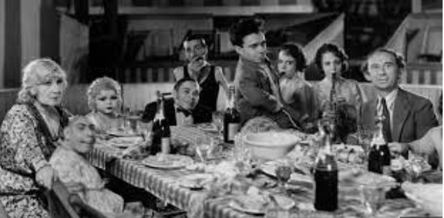

Freaks
Freaks is a 1932 American pre-Code horror film produced and directed by Tod Browning.
A beautiful and conniving trapeze artist named Cleopatra seduces a carnival sideshow little person named Hans after learning of his large inheritance. This much to the chagrin of Frieda, his fiancee, also a little person. Cleopatra also conspires with circus strongman Hercules to kill Hans so she will inherit his wealth. Meanwhile, other romances flourish among the sideshow performers: the Bearded Lady, who is in love with the Human Skeleton, gives birth to their daughter.